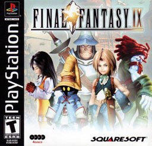
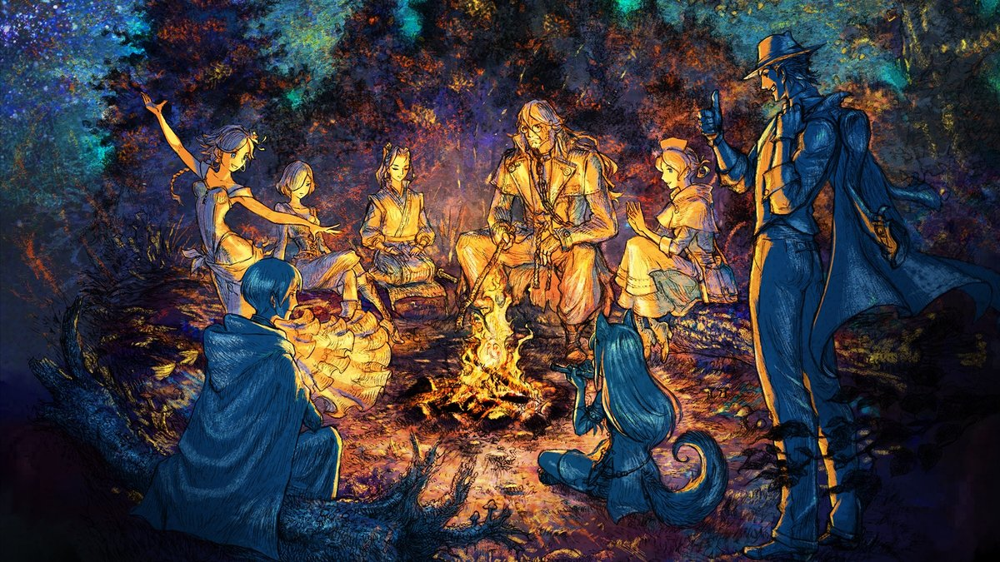
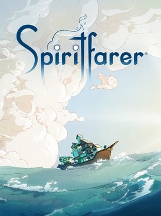
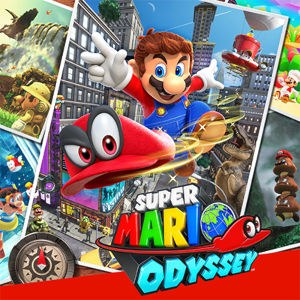

RPG d'action en monde ouvert
RPG d'action en monde ouvert
Cyberpunk 2077
CD Projekt RED · PC, PS5, Xbox Series, Switch 2
Night City, ses gangs, ses fixers et ses implants : toutes les missions, tous les contrats et l'extension, sans rien laisser derrière toi.
Interligne
Espacement des lettres
Police
La bibliothèque
13 guides complets. Filtre par genre, trie comme tu veux, ou cherche directement un objet avec la touche /.
RPG d'action en monde ouvert
CD Projekt RED · PC, PS5, Xbox Series, Switch 2
Night City, ses gangs, ses fixers et ses implants : toutes les missions, tous les contrats et l'extension, sans rien laisser derrière toi.
 Souls-like
Souls-like
FromSoftware · PC, PS4, Xbox One
Zone par zone, dans l'ordre le plus sûr : chaque boss, chaque PNJ, chaque objet, jusqu'aux deux extensions.
 Souls-like en monde ouvert
Souls-like en monde ouvert
FromSoftware · PC, PS5, PS4, Xbox Series, Xbox One
L'Entre-Terre région par région, puis le Royaume des Ombres : sites de grâce, quêtes de PNJ, boss et trésors.

RPG au tour par tourSquare · PS1, PC, PS4, Switch, Xbox, mobile
Quatre disques, du premier coffre aux dernières quêtes annexes : trésors, Chocobos et tout ce qui peut se rater.
 RPG au tour par tour
RPG au tour par tour
Square · PS1, PC, PS4, Switch, Xbox, mobile
Midgar et au-delà : chaque coffre, chaque Matéria, et les secrets du monde ouvert de fin de partie.
 RPG d'action en monde ouvert
RPG d'action en monde ouvert
Square Enix · PS5, PC, Switch 2, Xbox Series
Région par région : quêtes annexes, mini-jeux, Matérias et tout ce qu'il faut pour le 100 %.
 RPG d'action
RPG d'action
Square Enix · PS4, PS5, PC, Switch 2, Xbox Series
Midgar chapitre par chapitre : quêtes annexes, Matérias, armes et défis, plus l'épisode INTERmission.
 RPG au tour par tour
RPG au tour par tour
Square · PS3, PS Vita, PS4, PC, Switch, Xbox One
Le pèlerinage de Spira temple par temple, puis les armes ultimes, les Chimères purgatrices et le Sphérier.
 RPG d'action en monde ouvert
RPG d'action en monde ouvert
Avalanche Software · PC, PS5, PS4, Xbox Series, Xbox One, Switch, Switch 2
Poudlard, Pré-au-Lard et les Highlands de bout en bout : la trame, les quêtes de compagnons, les 12 devoirs, les 95 épreuves de Merlin et chaque collectible jusqu'au 100 %.

RPG au tour par tourSquare Enix / Acquire · Switch, PS5, PS4, Xbox, PC
Huit héros, quatre chapitres chacun : l'ordre conseillé, les coffres, les boss et les contenus de fin de partie.
 Simulation de vie et construction
Simulation de vie et construction
Switch 2
Reconstruire un monde avec les Pokémon : régions, habitats, recettes et collections, Pass d'extension compris.

Gestion et aventure cosyThunder Lotus Games · PC, Switch, PS4, Xbox One
Prendre soin des esprits avant de leur dire au revoir : toutes les régions, les quêtes, les recettes et les poissons.

Plateformes 3DNintendo · Switch
Chaque royaume, chaque lune de puissance et chaque tenue, jusqu'au compteur de 999 lunes.
Aucun guide ne correspond… pour l'instant. Essaie la